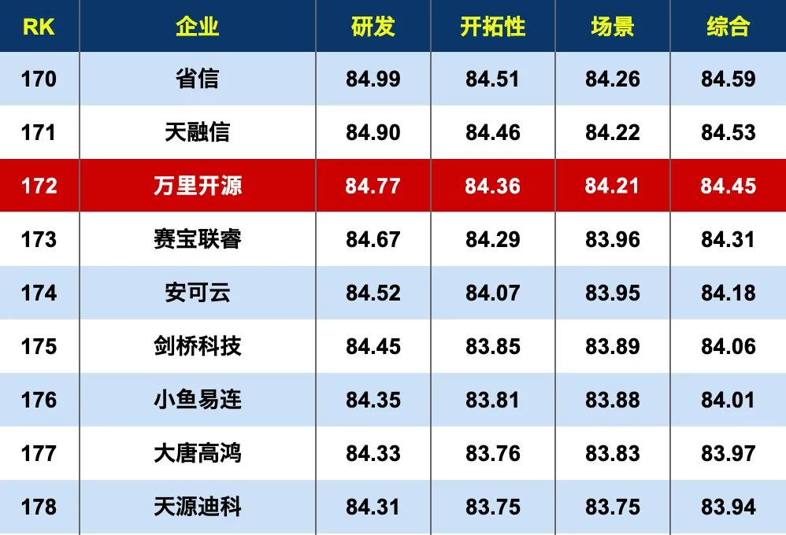

再获肯定 | 万里数据库入选《2020年度中国信创TOP500》
近日，中国科学院《互联网周刊》、eNet研究院、德本咨询联合发布了《2020年度中国信创TOP500》，作为分布式数据库头部企业，万里开源凭借数据库方面的综合实力成功入选榜单。

2020年度中国信创TOP500榜单（部分）
本次评选由《互联网周刊》组织开展，评选维度涵盖企业研发实力、产品开拓性、场景应用等维度，旨在打好信创产业的攻坚战，助力信息技术实现好用。此次入选，是万里数据库在解决方案、市场推广、生态建设等各方面努力的成果，标志着公司的综合实力已经处于国内领先水平。
万里数据库是北京万里开源软件有限公司自主研发的新一代分布式数据库，经过10余年的应用验证，在功能、性能、稳定性、易用性等方面均处于行业领先水平，历经500多个业务场景的锤炼，已广泛应用于金融、能源、通信、政府、交通等多个行业。
万里数据库一直在逐步完善产业链生态，与合作伙伴共建信创生态圈。目前万里数据库已与华为、曙光、浪潮、中科可控、中国长城、鲲泰等服务器厂商完成适配，与申威、龙芯、飞腾、鲲鹏、海光等芯片厂商完成适配，并且与麒麟软件、统信、万里红、拓林思等操作系统厂商完成了适配，在基础软硬件生态产业链适配上越来越完善，可以满足用户对信息技术应用创新的要求。
未来，万里数据库将以此为激励，不忘初心，牢记使命，坚持合作共赢，为用户和生态伙伴提供更好的产品和服务，为广大行业用户提供安全、可靠、高效的产品和解决方案，助力信创产业的发展。
推荐阅读1. 万里数据库亮相2021世界移动通信大会，助力5G技术升级
2. 3分钟了解万里数据库的2020
3. 万里数据库与联通在线沃音乐携手 共建海纳数据智能联合研发实验室


扫码二维码
关注公众号